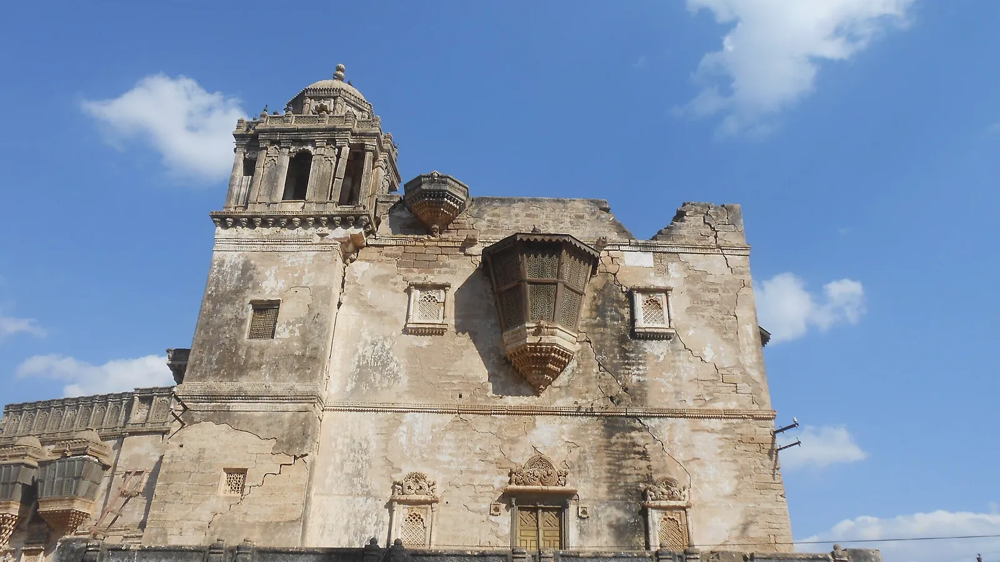
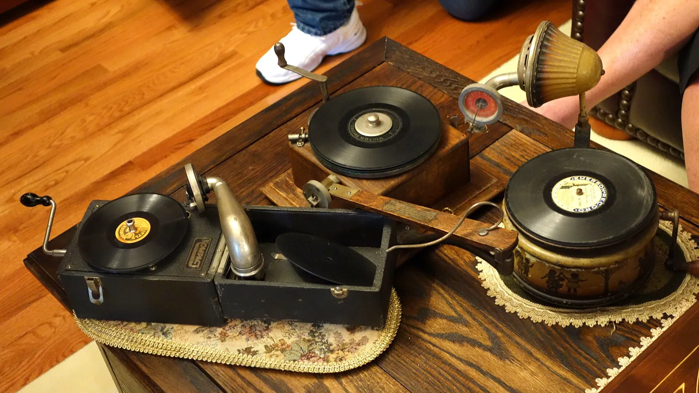
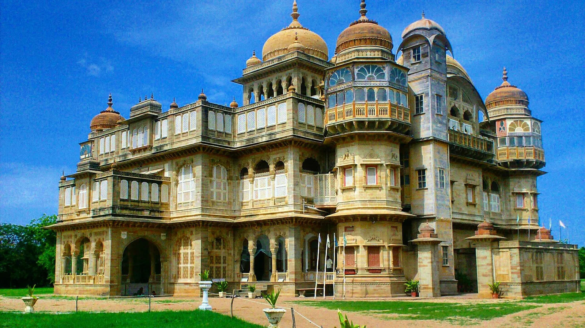
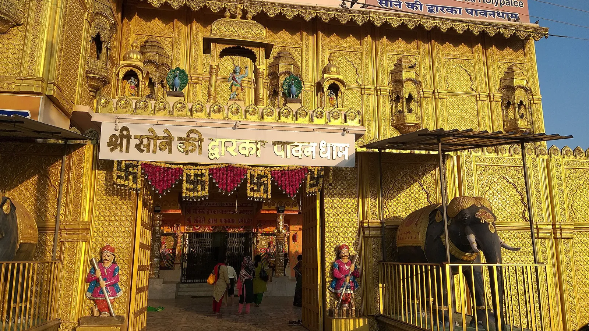
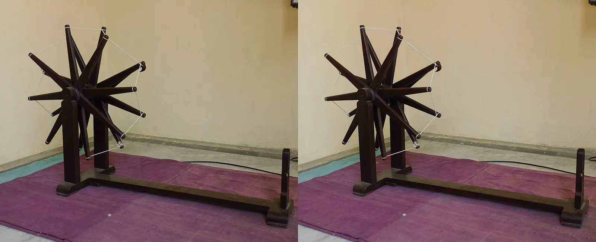
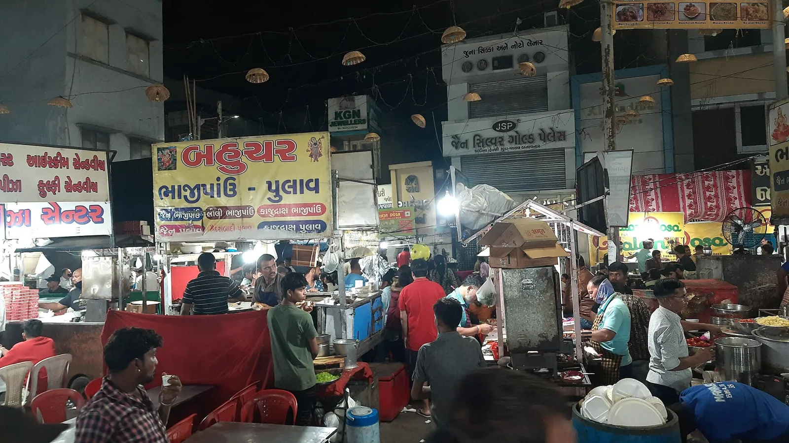
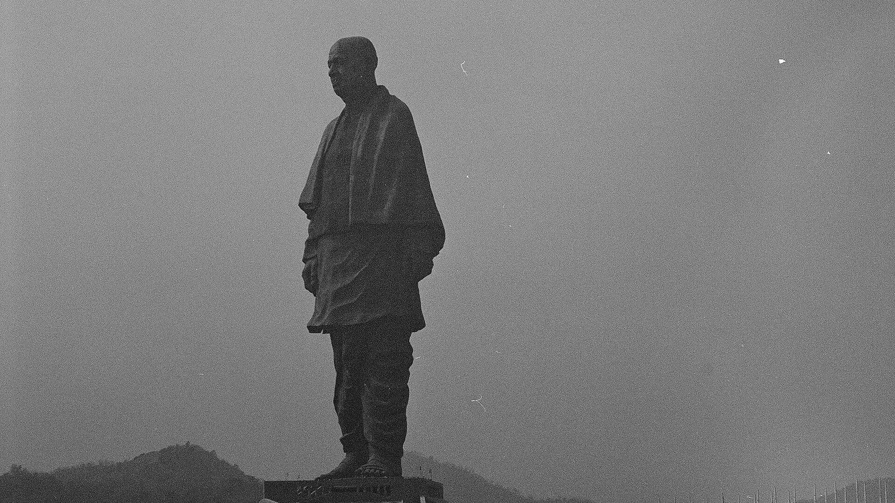
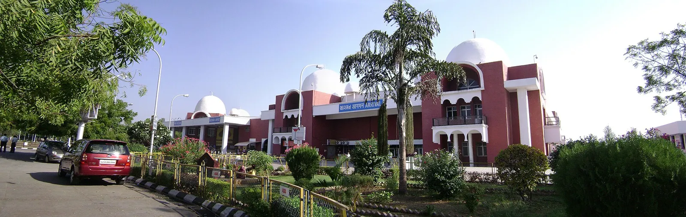
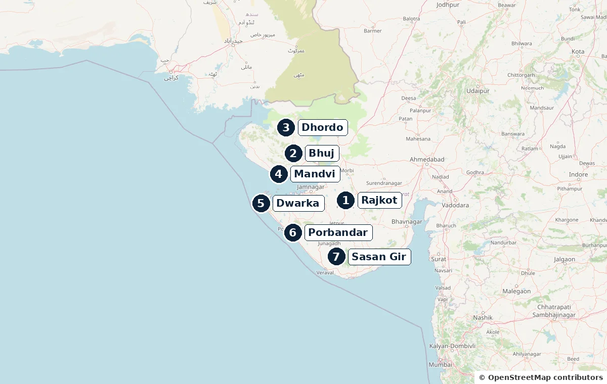

Gujarat in one loop. This itinerary is built from our nights-per-place outline; the day plans, timings and changes are ours. Two drives in the outline are long: Mandvi to Dwarka is about 380 km around the Gulf of Kutch (7 hours), and Gir to Ahmedabad about 350 km. We flag them on the day; a second night in Kutch, or a night in Jamnagar, softens the first.
See it for yourself
Photos from the journey










Where you go
The journey on one map

RajkotBhujDhordoMandviDwarkaPorbandarSasan GirAhmedabadKevadiaVadodara
Day by day, in short
Daily travel brief
Distances are by road for the whole day. The full plan with timings comes with your detailed itinerary.
-
1
Arrive in Rajkot
- Our home town.
-
2
Bhuj and the White Rann at sunset
- Aina Mahal and Prag Mahal, Bhuj: aina Mahal is closed on Saturdays.
- White Rann at Dhordo: a Rann permit is needed, issued online or at Bhirandiyara.
-
3
-
4
Vijay Vilas Palace and the long road to Dwarka
- Dwarkadhish temple aarti: phones and cameras are not allowed inside.
- This is the longest day.
-
5
-
6
Porbandar, Gandhi's birthplace
- Porbandar is optional; the night can move to Gir.
-
7
Somnath and on to Sasan Gir
- Safari permits booked online in your ID name.
-
8
Lions of Gir
- Gir jeep safari: closed 16 June to 15 October.
- A second safari can be added in the afternoon.
-
9
The long drive to Ahmedabad
- A long road day; breaks at Gondal or Rajkot.
-
10
To the Statue of Unity
- The statue is closed on Mondays; plan the gallery for tomorrow.
-
11
The Statue of Unity, the dam and the Ayurveda garden
- Statue of Unity viewing gallery: closed on Mondays.
- Kevadia has cycles and e-rickshaws to move between the parks.
-
12
Fly home from Vadodara
- Transfer to the airport: leave 4 hours before an international flight and 3 before a domestic one.
- Pack liquids and souvenirs in checked baggage.
Local know-how
Travel hacks from our desk
UPI, cards and cash
UPI works almost everywhere, even at small stalls. Keep some cash in INR 100 and 200 notes for temples, parking, tips and places where the network is weak.
Temple and shrine etiquette
Cover shoulders and knees. Remove shoes where asked, and carry socks for hot stone floors. Leather belts and bags are not allowed inside some Jain and Hindu temples. Ask before photographing people and inside shrines.
Water and street food
Drink sealed bottled or filtered water only. Choose busy stalls where food is cooked in front of you, and skip cut fruit and ice from roadside stalls.
Driving times
Indian roads are slower than the kilometres suggest: plan on 40 to 50 km an hour on highways and much less in hills and towns. Your driver's breaks and meal stops are built into the timings.
Plugs and tipping
Plugs are Indian three-pin and two-pin, 230 volts. Tipping drivers and guides about INR 300 to 500 a day is appreciated.
When to go
Best time to visit for this journey
December or January around the full moon, with the Rann Utsav on.
November to February, when the Rann is dry and white and the Rann Utsav tent city is open. Gir closes from 16 June to 15 October.
The package
What's included
Included
- Hotels as listed with breakfast
- Private air-conditioned car with driver for all transfers and sightseeing
- 24/7 support from Blue Diamond Voyage
- White Rann permit
- One Gir safari
Not included
- Flights and trains not listed as included
- Entry fees, guides, boats and activities
- Lunches and dinners unless stated
- Travel insurance
The detailed itinerary
Some journeys are planned. Ours are crafted.
The full 12-day plan is ready: hour-by-hour timings, drive times, temple dress codes, food for your diet and a route map for every day. Tell us your dates and your city, and we'll send it to you on WhatsApp, shaped around you.
- Hour-by-hour timings
- A route map for every day
- Hotel and room details
- Visa and entry steps
- Vegetarian and Jain dining
24/7 travel desk+91 97148 59797+91 98242 21400
Photo and map credits
- Rajkot International Airport Hirasar: HJMEHTA2110, CC0, via Wikimedia Commons
- Aina Mahal: Amrita.saha, CC BY-SA 4.0, via Wikimedia Commons
- Nirona: Daderot, CC0, via Wikimedia Commons
- Vijay Vilas Palace: Dharven Panchal, CC BY-SA 4.0, via Wikimedia Commons
- Bet Dwarka: VasuVR, CC BY-SA 4.0, via Wikimedia Commons
- Kirti Mandir Porbandar: VasuVR, CC BY-SA 4.0, via Wikimedia Commons
- Somnath Temple: Hritiksharma, CC BY-SA 4.0, via Wikimedia Commons
- Manek Chowk: Pravega, CC0, via Wikimedia Commons
- Statue of Unity: Veera.sj, CC0, via Wikimedia Commons
- Vadodara Airport: Notnarayan, CC BY-SA 3.0, via Wikimedia Commons
- Maps: © OpenStreetMap contributors; road routes by OSRM.